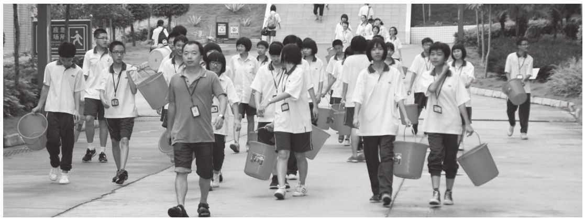

著名的教育家苏霍姆林斯基说过：“集体是教育的工具。”的确，一个优秀的班级全面发展，积极进取，必将对身处其中的每一个个体发展起着巨大的潜移默化的激励作用和教育作用。班级凝聚力是一种无形的力量，有利于每个同学都能够积极投入到班级的各项事务中去，为实现班级的共同目标而努力。提升班级凝聚力的途径有很多，充分利用每一次班集体活动是行之有效的。
一、树立集体意识，培养共同目标
初建班级，应该引导学生，对班集体的热爱，不管是以班级为核心的集体活动，还是竞技类的团体活动都应启发学生向同一个目标前行。确定好班级的目标，增强团队的协作能力，每个人都为了班级的共同目标而前进。我们应该清晰地认识到，有没有共同的奋斗目标，共同目标的意境与高低，都能直接影响班级的班风，影响班级的凝聚力、向心力和战斗力。
二、在汗水中培养自信，在过程中实施教育
李镇西老师说：“我们的班级生活应该为孩子们留下温馨的记忆。”我深信活动能够带给学生美好的记忆。班级活动是同学之间增进了解、建立友谊的桥梁，它能够密切教师和学生之间、学生和学生之间，甚至各学科教师之间的关系，体会到班集体的温暖，体会到融入集体的幸福，体会到作为一个集体的向心力和战斗力。
1.活动前：巧抓思想，做好准备工作。在举办活动的时候应该抓住每个活动的契机增强班级的凝聚力。活动开始必须做好思想动员工作，让学生意识到活动的重要，而后鼓励学生向着荣誉而战。有了共同的目标，激发学生取得荣誉的内动力，而后进行师生的沟通，大家一起想方设法去赢得班级荣誉。
2.活动中：调动全员，为荣誉而战。教师以活动的参与作为振奋士气的契机，把活动的组织作为班级凝聚力的增长点。我们应该明晰，活动带来的集体荣誉会给班级里的每一个人带来积极的心理暗示和影响。通过努力获得了荣誉，学生们心情愉悦，对班级产生了集体荣誉感、责任感和自豪感，这对班级凝聚力的产生和加强起到了积极的推动作用。
学校的运动会就是一次不错的班级活动展示。比如班级方阵展示，学生知道方阵是一个班级精神面貌的展示。为了能够体现班级风貌，班干部积极组织同学们商议他们上场的“行头”、队伍的队形、口号声的层次感、手中的道具造型等等，学生很认真地在训练着。活动面前，学生全员参与并为之奋斗，这就是班级向上的合力。
3.活动后：肯定付出，让优秀成为一种习惯。每一次的活动，都会是所有人的努力和付出，当班级收获荣誉时，我们要及时地、恰如其分地肯定学生，表扬的内容要具体，事例要典型，不能简单空洞流于形式。
在校级运动会时，参与的运动员虽是有限的，但是运动会却是一个重要的培养班级凝聚力的机会。没有参“赛”的同学就是最强大的后备力量，他们可以是运动员的助手，提供必要的帮助；可以是啦啦队，在比赛的场地为运动员呐喊助威；也可以是心理辅导员，帮助运动员调整心态。运动员用顽强拼搏的精神为班级争光，其他同学也用力所能及的实际行动为班级的荣誉而忙碌，这就是一种集体活动。活动后，班主任在总结时，肯定运动员的精彩表现，同时也指出其他同学付出的具体表现，让每个学生都能感受到在优秀班级的自我价值，让学生知道“每一个人的功劳都会被铭记”。
三、在泪水中学会反思，在反思中学会总结
有人说：“教育是温暖的，也充满力量。”教师要特别重视活动的结果给学生带来的影响，及时给他们一个温暖的支持。在活动中，学生不断努力有时会取得自己满意的成绩，但有时也不是那么的如意。集体活动，没有取得好的结果，没有达到班级的目标，也是教育的好机会。
1.反思：寻找失败背后的原因。学生积极准备广播操比赛，他们斗志昂扬，勤加练习。他们信心满满，但是结果却不如人意。学生的失落溢于言表，甚至有些气馁，部分同学还流下眼泪。面对这样的场面，我把学生带到了操场对他们的付出给予肯定，告诉他们正是因为大家对荣誉的在乎，所以才会有情绪。因为在乎，所以失落，因为在乎，所以伤心。同时理性地引导同学们反思：“是不是所有人都竭尽全力了？是不是每个动作都高度一致、整齐划一？下次活动想不要这样的结果，我们怎么办？”学生自发地说出了“团结，再战，同心协力”的心声。反思失败背后的原因，理性客观去看待每个活动的结果，比结果本身更有意义。
2.成长：静下心来让挫折变成动力。一次集体活动没有达到目标并不要紧，但是对于一个有强大凝聚力的班级却必须在乎成败，如果能够把失败的情绪加以激发，就是鼓舞士气的最佳契机，教师能够正面引导，学生便会燃起“再战”的热情。
面对失利，我布置了周记让同学们写写对这次活动的感受，让内心的感受变成理性的思考。静下心来，回忆活动中的点点滴滴，写身边的故事，抒内心的感受，把活动内化成学生的思考内容，更利于让学生正确看待成长中遇到的挫折。在文章中，看到一个一个不服输的孩子，他们有着豪言壮志，他们愿意去用行动再次证明自己的实力，班级的凝聚力跃然纸上。
魏书生曾说：“班集体，人们生于斯，长于斯，变化于斯。在其中时，关心她，爱护她，为她吃苦，为她的荣誉而奋斗。”所以一个有着强大凝聚力的班级，将是学生赖以存在的一个良好的栖息地，同时又是学生成长中一段美好回忆的载体。的确，班主任带领班级，师生一起参与活动，尽情挥洒汗水，让每一份荣誉都刻上学生的功勋，而流下的热泪就是同甘共苦的见证，这些都将成为班级中每个学生成长的足迹。
当然，班集体活动除了学校统一组织的比赛型、竞技型的活动外，班主任也要根据班级的具体情况，组织一些趣味性、娱乐性、拓展性、励志性的活动，比如班级的小型辩论赛、周末的户外拓展活动、节假日的考察研学活动、考试后的放松文体活动等。每一个活动要有具体的设计，充分考虑每一个教育的细节，充分论证活动的安全风险，确保班集体活动的教育性和安全性。

作者和他的学生一起参加植树节活动